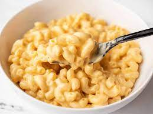

Mac and Cheese

Recipe for a simple Mac and Cheese Meal
Cheese and pasta just go so well together, don't they?
This is a quick and easy one for the novice cook, with simple ingredients
and it doesn't take long to cook.
I love cheese so much that pretty much anything with cheese could have made it on my list
of favourite recipes. The creamy sauce really does it for me, and combine it with macaroni pasta,
it makes it wonderful.
Ingredients
- 1 (8 ounce) box elbow macaroni
- 1/4 cup butter
- 1/4 cup all-purpose flour
- 1/2 teaspoon salt
- ground black pepper to taste
- 2 cups milk
- 2 cups shredded Cheddar cheese
Cooking Steps
- Bring a large pot of lightly salted water to a boil.
Cook elbow macaroni in the boiling water,
stirring occasionally until cooked through but firm to the bite, 8 minutes.
- At the same time, melt butter in a saucepan over medium heat.
Add flour, salt, and pepper and stir until smooth, about 5 minutes.
Pour in milk slowly, while stirring continuously.
Continue to cook and stir until mixture is smooth and bubbling,
about 5 minutes, making sure the milk doesn't burn.
- Add Cheddar cheese and stir until melted, 2 to 4 minutes.
- Drain macaroni and fold into cheese sauce until coated.
Source of recipe